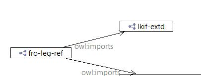

-

https://opensource.org/licenses/MIT -
https://opensource.org/licenses/GPL-3.0

| Imports | |
|---|---|
| owl:imports | |
|
| https://opensource.org/licenses/MIT |
|
| https://opensource.org/licenses/GPL-3.0 |
|
| Jurgen Ziemer |
|
| Jayzed Data Models Inc. |
|
| owl:Ontology |
|
| Legal Reference ontology contains extensions to the Legal Knowledge Interchange Format (LKIF): * Prefixes for the LKIF module * Classes Exceutive Body, Financial Regulation, Regulatory Authotity etc. The extensions are not country/jurisdiction specific. |
| References | |
|---|---|
| |
© 2016 Jayzed Data Models Inc. generated with TopBraid Composer back to Financial Regulation Ontology or documentation index